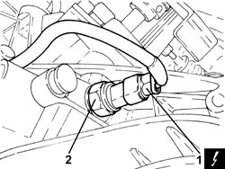
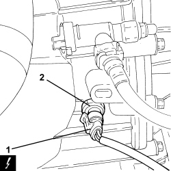
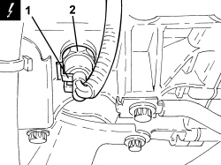

5550D22 REVERSING LIGHT SWITCH - R+R
- Path
- Procedures > 55 ELECTRICAL EQUIPMENT > 5550 WARNING AND MANOEUVRING INDICATORS > 5550D BRAKE AND REVERSING LIGHTS > 5550D22 REVERSING LIGHT SWITCH - R+R
- Kind
- repair procedure (removal / refitting; the operation number is the code)
- Applies to
- engines: 1.8, 2.2, 1.9 JTD 8v, 1.9 JTD 16v; all production periods
- Interactive page
- https://sloeber94.github.io/elrnDB-fCrm/en/#/194000773
Applies to: engines: 2.2; all production periods
 Removing
Removing
 Refitting
Refitting- Position the vehicle on a lift.
- Make sure that the ignition key is in the OFF position, then disconnect the battery terminal (-).
Description | Connector | |
|---|---|---|
- | Battery |
1. Disconnect the electrical connection from the reversing light switch.
Description | Connector | |
|---|---|---|
1 | Reversing lights switch |
2. Undo and remove the reversing light switch.

Applies to: engines: 2.2; all production periods
Refitting
Removing- Place the reversing light switch in position and tighten it to the recommended torque.
Component | Fastening | dia | Value (daNm) | Validity |
|---|---|---|---|---|
Reversing light switch | - | - | (gearbox side) 1.7 | 2.2 |
- Connect the electrical connection to the reversing light switch.
- Connect the negative battery terminal.
- Remove the vehicle from the lift.
Applies to: engines: 1.9 JTD 8v, 1.9 JTD 16v; all production periods
Removing
RefittingOp. 5530B52 BATTERY SUPPORT/DRIP TRAY - R.R
1. Disconnect the electrical connection from the reversing light switch.
Description | Connector | |
|---|---|---|
1 | Reversing lights switch |
2. Undo and remove the reversing light switch.

Applies to: engines: 1.9 JTD 8v, 1.9 JTD 16v; all production periods
Refitting
Removing- Place the reversing light switch in position and tighten it to the recommended torque.
Component | Fastening | dia | Value (daNm) | Validity |
|---|---|---|---|---|
Reversing light switch | - | - | (gearbox side) 2.0 | 1.9 JTD 8V 1.9 JTD 16V |
- Connect the electrical connection to the reversing light switch.
Applies to: engines: 1.8; all production periods
Removing
Refitting1. Disconnect the electrical connection for the reversing light switch.
Description | Connector | |
|---|---|---|
1 | Reversing lights switch |
2. Undo the reversing light switch and remove it from the gearbox.

Applies to: engines: 1.8; all production periods
Refitting
Removing- Place the reversing light switch in position and tighten it to the recommended torque.
Component | Fastening | dia | Value (daNm) | Validity |
|---|---|---|---|---|
Reversing light switch | - | - | 2.0 | 1.8 |
- Connect the electrical connection for the reversing light switch.
Topics linked from this page (4)
- 5530B10 BATTERY - R+R
- 5530B52 BATTERY SUPPORT/DRIP TRAY - R.R
- A001 BATTERY
- I020 REVERSING LIGHTS SWITCH